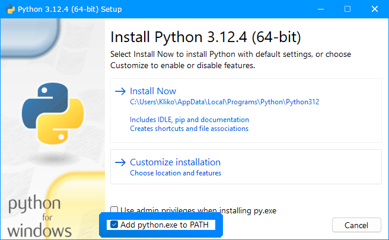

Documentation
Quick Access
Kliko's modloader
Personalize your Roblox experience
Mods are a way to customize the appearance of your Roblox Player. They are quite limited in what you can change, but — if you know what you're doing — you can make it look awesome. The most common mods are those that affect UI elements and character sounds, as showcased below.
You can find Roblox mods on sites like GameBanana, in our Discord server or in servers for other programs that share the same functionality (example: Bloxstrap). The mods you've downloaded should be in the form of a .zip file. Follow these steps to install them:
Mods should be added to your mods folder with the following file structure:
Troubleshooting Guide
Make sure that Python is installed before trying to launch Kliko's modloader. If Python is already installed, and this issue still happens, please follow these steps:
"Python was not found"
This means that windows does not recognize the python command. Please reinstall python and make sure to check the box that says 'Add python.exe to PATH', as shown in the image below.

As of writing this, Kliko's modloader is only supported on Windows platforms, with no plans of adding support for other systems. Because of this, users attempting to launch this program on an unsupported OS will receive this error message.
This error occurs when one of the required config files could not be found. Simply reinstalling Kliko's modloader should fix this issue.
This error message is shown when the user chooses to update to a newer version of Kliko's modloader, the URL to the latest release will automatically open in your default browser.
This error occurs when the user refuses to update to a newer Roblox version.
This happens when the user tries to launch Kliko's modloader with invalid launch arguments.
If you receive this error message, it means that I have accidentally released an incomplete version of Kliko's modloader. Please join the Discord server to report this issue.
Unexpected errors are any errors not listed above. To get more information on why you received this error message, please read the latest log file in "%localappdata%\Kliko's modloader\Logs". If you need any assistance, you are welcome to join our support server and let us know.
 Old escape menu without (left) and with (right) Kliko's mod
Old escape menu without (left) and with (right) Kliko's mod